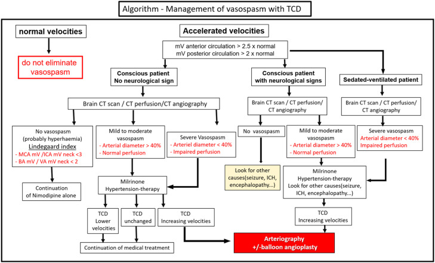
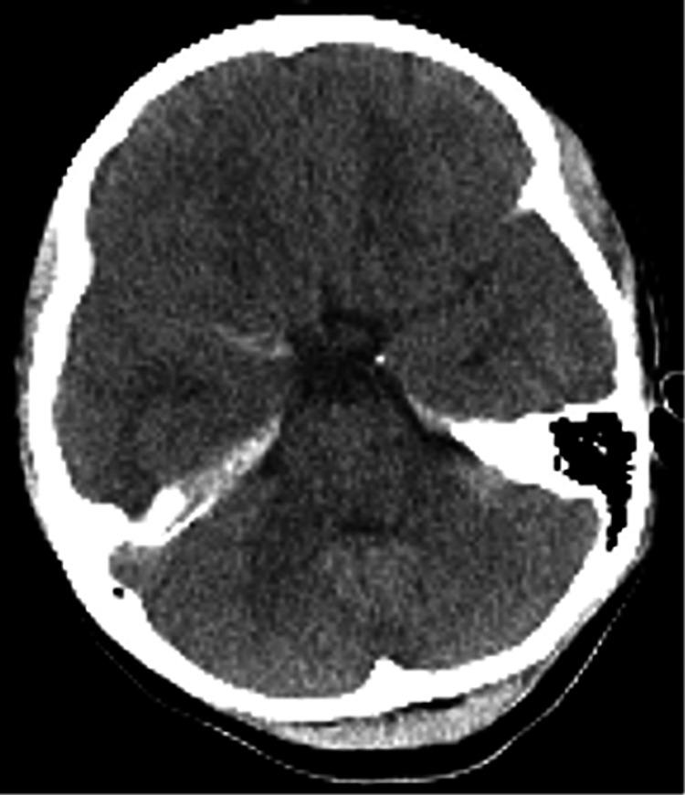
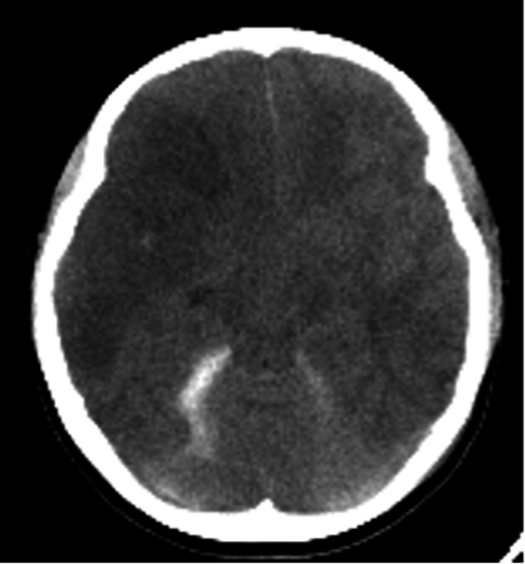
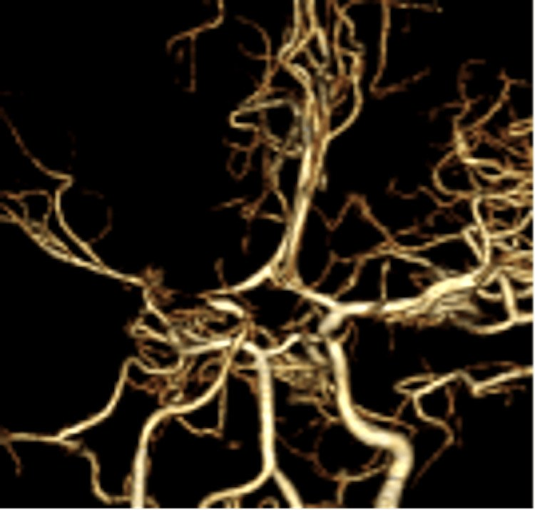
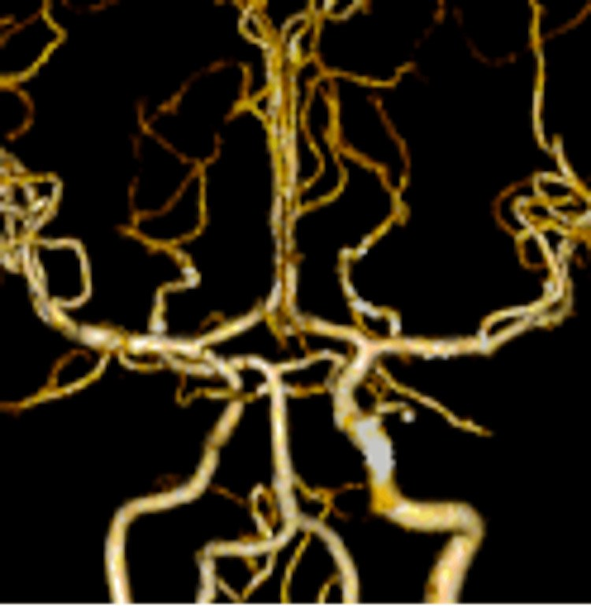

239 — Co thắt mạch não sau chấn thương sọ não ở trẻ / Post-traumatic cerebral vasospasm in children
Tags: pattern:co-mach-nao vung:nao-nhi vung:nao protocol:TCD-nao-nhi protocol:CTA-nao protocol:CTP-nao
Mức chắc chắn (certainty): tổng hợp y văn (literature synthesis) — số liệu lấy từ tổng quan PTV 2025 (PMC12572897), tổng quan co thắt sau tSAH 2026 (PMC13515500), loạt ca nicardipine nội tủy ở trẻ (PMC12149007); ca trong quiz là ca nguyên văn 12 tuổi (PMC10944334) giữ đúng mốc ngày – ICP – can thiệp của bài gốc.
Bài này là "chuyện sau chẩn đoán" của 653 – PRES & RCVS ở trẻ em và 676 – RCVS ở trẻ em: điều trị. 676 dạy phân biệt RCVS với co thắt sau aSAH; bài này dạy thể thứ ba hay bị quên: co thắt sau chấn thương sọ não (post-traumatic vasospasm, PTV) — cùng hình ảnh "mạch hẹp", nhưng mốc thời gian, cơ chế và cách xử trí khác hẳn.
1. Tổng quan — vì sao mạch hẹp sau chấn thương, và vì sao trẻ khó đọc hơn người lớn
- Định nghĩa: PTV = hẹp lòng động mạch não lớn, khởi phát sau chấn thương sọ não (traumatic brain injury, TBI), có thể hồi phục, gây thiếu máu não muộn (delayed cerebral ischemia, DCI). DCI theo AHA = suy giảm thần kinh khu trú hoặc giảm ≥ 2 điểm GCS kéo dài ≥ 1 giờ, không giải thích được bằng nguyên nhân khác.
- Vì sao mạch hẹp (cơ chế — TẠI SAO hình ảnh trông như vậy):
- Máu trong khoang dưới nhện (traumatic subarachnoid hemorrhage, tSAH): hồng cầu vỡ giải phóng oxyhemoglobin bắt giữ nitric oxide (NO) → mất giãn mạch nội mô; tăng endothelin-1, IL-6, IL-1β, TNF-α → co cơ trơn thành mạch. Đây là phần dùng chung với aSAH.
- Cơ học (khác aSAH): kéo giãn thành mạch do lực va đập/sóng xung kích (blast) → co thắt dù không có máu dưới nhện. Vì vậy không thấy tSAH không loại trừ PTV (37,9% có tSAH so với 31,3% không có, p = 0,34).
- lan tỏa vỏ não giảm khử cực (cortical spreading depolarization) + rối loạn tự điều hòa → nhu cầu oxy tăng trong khi tưới máu không tăng theo.
- Vì sao TCD thấy "vận tốc tăng" chứ không thấy "mạch hẹp": theo phương trình liên tục, vận tốc ∝ lưu lượng / tiết diện lòng mạch; lòng mạch giảm một nửa đường kính → tiết diện giảm 4 lần → vận tốc tăng ~4 lần nếu lưu lượng giữ nguyên. TCD không nhìn thấy thành mạch, chỉ đo vận tốc — nên tăng vận tốc do tăng lưu lượng (hyperemia) cho hình ảnh y hệt.
- Ngưỡng định lượng nằm lòng (đọc bài là phải nhớ số):
- Tỷ lệ mắc PTV: người lớn 25–60% TBI; trẻ em 18–45%; khác nhau theo công cụ: TCD 19–68% so với chụp mạch 18,6–41%.
- Theo độ nặng ở trẻ (69 trẻ): GCS ≤ 8 → 33,5%; GCS 9–12 → 8,5%.
- tSAH có ở 33–60% chấn thương trung bình–nặng; DCI sau tSAH ~17%; DCI nói chung sau TBI 2,1–12%.
- TCD: MFV (mean flow velocity) động mạch não giữa > 120 cm/s + Lindegaard > 3 = co thắt trung bình; MFV > 200 cm/s = nặng; Lindegaard > 6 = nặng; hệ số thân nền/đốt sống (BA/VA) > 2 = co thắt sau.
- CTA so với DSA: độ chính xác 90%, dương tính giả 5%, độ nhạy tới 91%, độ đặc hiệu ~95% (giảm ở mạch xa).
- NIRS: rSO₂ giảm ≥ 14,7% so với nền → gợi ý thiếu máu do co thắt; qEEG đổi trước suy giảm lâm sàng > 24 giờ.
- Mốc thời gian — chỗ hay đặt sai ngưỡng theo dõi:
- Sau tSAH: bắt đầu ngày 1–2, đỉnh ngày 5–7 (sớm hơn aSAH).
- Sau aSAH: bắt đầu ngày 3–5, hẹp tối đa ngày 5–14, hồi phục 2–4 tuần.
- Trẻ em: PTV thường xuất hiện 2–6 ngày sau chấn thương, đôi khi sau ngày thứ 6 → cửa sổ theo dõi phải dài hơn trực giác "vài ngày đầu".
- Tuần hoàn trước kéo dài hơn tuần hoàn sau (cả trẻ và người lớn).
- Thể tích máu dưới nhện KHÔNG tương quan với PTV: thang Fisher không dùng để tiên đoán PTV (khác aSAH) — đừng suy từ "máu ít" ra "không co thắt".
- Vì sao trẻ khác người lớn (3 điểm quyết định cách đọc):
- Vận tốc dòng nền ở trẻ cao hơn người lớn → áp ngưỡng người lớn (> 120 cm/s) chẩn đoán quá tay; chưa có giá trị Lindegaard nào được thẩm định ở trẻ.
- Đồng thuận Delphi về TCD ở hồi sức nhi khuyến cáo dùng xu hướng vận tốc theo ngày hơn là một con số tuyệt đối.
- An thần kéo dài (chỉ 11% ca TBI ngừng an thần trong 24 giờ đầu) → mất dấu hiệu lâm sàng; nhiều ca chỉ lộ ra khi ICP tăng hoặc đã nhồi máu trên CT.
2. Mẫu hình + chẩn đoán phân biệt theo cơ chế và vị trí (Gamut)
Theo cơ chế khởi phát (3 nhóm — cách phân loại dùng trong tổng quan PTV 2025):
- PTV liên quan tSAH: gần giống aSAH, sớm hơn (ngày 1–2, đỉnh 5–7); máu lan trên lồi não (convexity) chứ không dồn bể nền.
- PTV sau máu tụ khác (đụng dập, máu tụ dưới màng cứng, ngoài màng cứng, máu trong nhu mô): xảy ra sớm hơn aSAH.
- PTV sau chấn thương do sóng xung kích (blast): cơ chế cơ học thuần, có thể không có máu dưới nhện.
Theo mạch bị ảnh hưởng: MCA (dễ thấy nhất trên TCD, thân M1 ở độ sâu 45–55 mm) > ICA nội sọ > thân nền; ACA/PCA kém tin cậy trên TCD.
Gamut "mạch hẹp sau chấn thương" — 4 câu hỏi phải trả lời trước khi gọi là PTV:
- Hẹp có thật không? (ảnh nguồn, hai bên, cùng thì — không chỉ dựng 3D).
- Hẹp có hồi phục không? (chụp lại sau 1–2 tuần là chốt của "co thắt").
- Có tăng lưu lượng toàn thể không? (Lindegaard < 3 = hyperemia, không phải co thắt).
- Có nguyên nhân khác gây thiếu máu không? (ICP cao/CPP thấp, tụt huyết áp, thiếu máu, tắc mạch do chấn thương).
3. Bảng so sánh phân biệt (ma trận đối chiếu)
| Thực thể (entity) | Hình ảnh điển hình | Chốt vào (rule-in) | Chốt loại (rule-out) | Gợi ý xác nhận |
|---|---|---|---|---|
| PTV sau tSAH | Hẹp từng đoạn MCA/ICA, khởi phát ngày 1–2, đỉnh ngày 5–7, máu trên lồi não, có thể kèm nhồi máu theo lãnh thổ muộn | TCD tăng vận tốc theo xu hướng + Lindegaard > 3 + CTA hẹp + hồi phục khi chụp lại | Hẹp không đổi sau 2–4 tuần → nghĩ xơ vữa/bóc tách, không phải co thắt | TCD hằng ngày ngày 1–14; CTA/CTP khi vận tốc tăng; DSA là chuẩn |
| PTV sau máu tụ khác (đụng dập, SDH, EDH) | Hẹp sớm hơn, cùng bên khối máu tụ hoặc lan tỏa; ổ nhồi máu muộn | Khối máu tụ + hẹp cùng bên + không có bể nền dày | Không hẹp khi chụp lại, vận tốc bình thường → loại | CTA mạch máu + MRI/DWI nhu mô |
| Hyperemia sau TBI | Vận tốc tăng đều cả trong lẫn ngoài sọ, mạch không hẹp trên CTA, não phù/tăng tưới | Lindegaard < 3 + CTA lòng mạch bình thường | Lindegaard > 3 + hẹp lòng thật → không phải hyperemia | TCD + CTA cùng ngày; theo dõi ICP |
| Thiếu máu do ICP cao/CPP thấp | Nhồi máu lan tỏa hoặc theo vùng ranh giới (watershed), mạch không hẹp | ICP tăng + CPP = MAP − ICP thấp (ca dưới: ICP 40 → CPP 30) + hạ huyết áp | Có hẹp lòng khu trú + vận tốc tăng → phải xét co thắt phối hợp | Monitor ICP/CPP; CTP; đáp ứng với nâng huyết áp |
| Co thắt sau aSAH | Hẹp bể nền, khởi phát ngày 3–5, đỉnh 5–14, có túi phình | Túi phình + máu bể nền (modified Fisher cao) + mốc ngày 4–14 | Không có phình + máu chỉ trên lồi não → nghĩ PTV | CTA/DSA; điểm modified Fisher |
| RCVS | "Chuỗi hạt" nhiều ổ, không theo lãnh thổ, hồi phục < 12 tuần | Đau đầu sét đánh tái diễn ≥ 3 cơn + không chấn thương + hồi phục | Có chấn thương + khởi phát trong 48 giờ + sedated → PTV | MRA/CTA lặp; RCVS2 ≥ 5 |
| Bóc tách/giả phình do chấn thương | Hẹp hình nón/đuôi chuột, lưỡi nội mạc/hai lòng, giả phình giữ hình khi chụp lại | Vạt nội mạc + giả phình + không hồi phục | Hẹp trơn đều, hồi phục → co thắt | CTA lát mỏng 0,6–1 mm; DSA; HR-vwMRI |
| Giả hẹp do dựng ảnh/artifact | Hẹp chỉ trên ảnh dựng 3D (VR/MIP), mất khi xem ảnh nguồn; tại chỗ chia nhánh | Ảnh nguồn bình thường + hai bên đối xứng | Hẹp thấy trên ảnh nguồn + trên ≥ 2 kỹ thuật → thật | Luôn đọc ảnh nguồn; so MIP với MPR |

Sơ đồ gợi ý của tổng quan PTV 2025: từ vận tốc bình thường (không loại trừ co thắt) → vận tốc tăng → phân nhánh theo Lindegaard, triệu chứng, đường kính mạch trên CTA → milrinone/kiểm soát huyết áp → DSA ± nong bóng. Giấy phép CC BY-NC-ND 4.0, giữ nguyên bản.4. Protocol chụp + hệ phân độ và ngưỡng điều trị
Theo dõi (protocol):
- TCD: đặt từ ngày 1, lặp hằng ngày (hoặc cách ngày) đến ngày 14 ở trẻ GCS ≤ 8 hoặc có tSAH/máu tụ ngoài trục; ghi MFV, PSV, chỉ số mạch đập (PI), Lindegaard, và xu hướng (quan trọng hơn trị số tuyệt đối ở trẻ).
- CTA: lát 0,625–1 mm, từ nền sọ đến đỉnh; chụp khi TCD tăng theo xu hướng, GCS giảm không giải thích, ICP tăng, hoặc trước khi quyết định can thiệp. CTA ngày đầu bình thường KHÔNG loại trừ — phải chụp lại.
- CT tưới máu (CTP): phân biệt co thắt còn bù (Tmax kéo dài, CBV bình thường) với nhồi máu đã hình thành (CBV giảm) — quyết định có can thiệp hay không.
- DSA: chuẩn tham chiếu, và điều trị được luôn (giãn mạch nội động mạch, nong bóng).
- Theo dõi bổ trợ: NIRS (rSO₂ giảm ≥ 14,7%), qEEG (mất biến thiên alpha, giảm tỉ lệ alpha/delta trước lâm sàng > 24 giờ), PbtO₂ khi có đầu dò.
Điều trị (ngưỡng và con số):
- Không dùng triple-H (tăng thể tích–tăng huyết áp–pha loãng máu): làm nặng phù não ở TBI; chỉ giữ đủ thể tích (euvolemia) + tăng huyết áp có đích.
- Nimodipine: chuẩn ở aSAH (21 ngày), nhưng ở tSAH bằng chứng trái chiều: gộp 4 thử nghiệm, 1.074 bệnh nhân → kết cục xấu 39% so với 40% (OR 0,88; 95% CI 0,51–1,54), tử vong 26% so với 27% (OR 0,95; 0,71–1,26); HIT 4 (n = 577) âm tính. Tác hại chính: tụt huyết áp làm giảm CPP.
- Milrinone (ức chế PDE3): nội động mạch 8 mg/động mạch → đường kính mạch tăng 53% ± 37%; liều 5 mg/động mạch (1/14 ca cần lặp); truyền tĩnh mạch trong loạt 94 ca aSAH giảm nhu cầu nong bóng.
- Nimodipine + milrinone tĩnh mạch so với nimodipine + triple-H (RCT n = 30, tSAH nhẹ–trung bình): oxy hóa não tốt hơn, GCS ngày 14 cao hơn, thời gian ICU/viện ngắn hơn — nhưng cỡ mẫu nhỏ, chưa đủ để thành chuẩn.
- Nicardipine nội tủy (off-label, loạt ca nhi): 4 mg mỗi 8 giờ × 5 ngày qua EVD ở 3 bệnh nhân 16–17 tuổi (SAH không do chấn thương); vận tốc đỉnh MCA giảm trung bình −144 cm/s (trung vị −82; ca nặng nhất 414 → 124 cm/s), không ca nào ICP > 20 cm H₂O. Đây là báo cáo ca, không phải chuẩn.
- Block hạch sao (stellate ganglion block): C6–C7, dưới siêu âm, bupivacaine/ropivacaine; tác dụng 12–24 giờ; bằng chứng chỉ từ nghiên cứu nhỏ n = 15 và 20 ở aSAH.
- Giải ép sọ khi có nhồi máu lan rộng + ICP tăng (ca dưới đây mổ giải ép 2 lần: ngày 7 bên phải, ngày 8 bên trái).
flowchart TD
A[Trẻ TBI nặng GCS ≤ 8<br/>có tSAH hoặc máu tụ] --> B[TCD ngày 1 rồi hằng ngày đến ngày 14]
B --> C{Vận tốc MCA tăng theo xu hướng?}
C -->|Không| B
C -->|Có| D{Lindegaard > 3?}
D -->|Không| E[Hyperemia hoặc thiếu máu do ICP cao<br/>xử trí ICP và CPP trước]
D -->|Có| F[CTA lát mỏng ± CTP khẩn]
F --> G{Hẹp lòng mạch thật + giảm tưới máu?}
G -->|Không| H[Theo dõi tiếp, tìm nguyên nhân khác]
G -->|Có| I[Euvolemia + tăng huyết áp có đích<br/>tránh triple-H]
I --> J{Cải thiện lâm sàng và TCD?}
J -->|Có| K[TCD cách ngày, CTA lặp sau 1 đến 2 tuần]
J -->|Không| L[Milrinone tĩnh mạch hoặc DSA<br/>giãn mạch nội động mạch, nong bóng]
L --> M{Còn nhồi máu lan rộng hoặc ICP tăng?}
M -->|Có| N[Giải ép sọ + hồi sức thần kinh]
M -->|Không| K
5. Biến thể bình thường và cạm bẫy
- "Không thấy gì trên CTA ngày đầu" là cạm bẫy chết người: ca dưới đây chụp CTA ngày 2 hoàn toàn bình thường, đến ngày 9 mới lộ hẹp nặng MCA phải — trong khi nhồi máu đã có từ ngày 7. Co thắt là quá trình động, không phải ảnh tĩnh.
- Nhồi máu trên CT không đồng nghĩa với co thắt: nhồi máu là hậu quả; phải chứng minh hẹp lòng mạch trước khi gọi PTV. Trong ca dưới, ICP 40 mmHg và CPP 30 mmHg cũng đủ gây nhồi máu — hai cơ chế cộng hưởng.
- Đừng suy từ "máu dưới nhện ít" ra "không co thắt": Fisher không tiên đoán PTV; PTV xảy ra cả khi không có tSAH.
- Hyperemia ở trẻ bị gọi nhầm là co thắt: trẻ có vận tốc nền cao; nếu Lindegaard < 3 và CTA lòng mạch bình thường → không phải co thắt. Không tăng liều thuốc giãn mạch chỉ vì "vận tốc 130 cm/s".
- Ảnh dựng 3D (VR/MIP) tạo hẹp giả tại chỗ chia nhánh và chỗ mạch đi vuông góc mặt cắt — luôn đọc ảnh nguồn (MPR) và so hai bên trước khi kết luận.
- An thần che dấu: khi bệnh nhân sedated, dấu hiệu duy nhất có thể là ICP tăng — đừng chờ "liệt nửa người".
- TCD bình thường không loại trừ (cửa sổ xương kém, mạch xa, vận tốc giảm vì CPP thấp): dùng xu hướng + CTA/CTP khi nghi ngờ.
- Không áp Lindegaard của người lớn cho trẻ như một ngưỡng chốt — chưa được thẩm định; dùng như xu hướng phụ trợ.
6. Tự lượng giá — Blind Quiz
Ca 1 — Bé gái 12 tuổi, tai nạn xe đạp, GCS 3, đồng tử giãn. CT sọ ngày 1:

- Gợi ý lâm sàng: GCS 3, huyết áp 140/50 mmHg, ICP ban đầu 4 mmHg.
- Câu hỏi: (1) Mô tả tổn thương chính? (2) Có dấu hiệu nào của co thắt mạch trên phim này không? (3) Nguy cơ nào phải theo dõi trong 1–2 tuần tới?
Bấm để hiện đáp án (findings + chẩn đoán)
- Dấu hiệu: đụng dập thùy thái dương phải, máu tụ dưới màng cứng cạnh lều, máu dưới nhện trong rãnh Sylvius; không máu trong nhu mô, không phù não lúc này.
- Không có dấu hiệu co thắt trên CT không cản quang — co thắt không thấy được nếu không chụp mạch (CTA/MRA/DSA) hoặc TCD.
- Nguy cơ: với GCS ≤ 8, tỷ lệ PTV ở trẻ ~33,5% (so với 8,5% ở GCS 9–12); đỉnh ngày 5–7. Phải TCD hằng ngày và chụp mạch lặp nếu có dấu hiệu.
- Nguồn ảnh: Tanikawa D et al., Cureus 2024, PMC10944334, Fig. 1, CC BY 4.0.
Ca 2 — Cùng bệnh nhân, ngày 7: ICP tăng vọt 40 mmHg. CT sọ:

- Câu hỏi: (1) Vùng giảm tỷ trọng nằm ở lãnh thổ nào? (2) Vì sao ICP tăng lại là dấu hiệu của biến chứng mạch máu? (3) Tính CPP và nêu 2 nguyên nhân gây nhồi máu ở ca này.
Bấm để hiện đáp án
- Dấu hiệu: giảm tỷ trọng lan rộng lãnh thổ động mạch não giữa (MCA) phải + vùng hồi thẳng trái → nhồi máu.
- ICP tăng là dấu hiệu gián tiếp: bệnh nhân sedated, GCS 3 → không có dấu hiệu thần kinh khu trú; phù do nhồi máu làm ICP tăng. Trong bài gốc, ICP 40 mmHg, CPP = MAP − ICP = 30 mmHg.
- Hai nguyên nhân cộng hưởng: (a) co thắt mạch (chứng minh bằng CTA ngày 9); (b) giảm áp lực tưới máu do ICP cao/CPP thấp. Vì vậy không được quy hết cho co thắt rồi bỏ qua kiểm soát ICP.
- Nguồn ảnh: Tanikawa D et al., Cureus 2024, PMC10944334, Fig. 3, CC BY 4.0.
Ca 3 — Ngày 9 và ngày 29: hai lần CTA dựng 3D, cùng bệnh nhân.


- Câu hỏi: (1) So sánh hai ảnh — bên nào hẹp, đoạn nào? (2) Dấu hiệu này chốt điều gì? (3) Nếu bệnh nhân chỉ được chụp một lần vào ngày 29, kết luận nào sẽ SAI?
Bấm để hiện đáp án
- Ngày 9: hẹp nặng MCA phải (đoạn M1–M2) — nhánh mạch mất dần tín hiệu so với bên đối diện. Ngày 29: MCA phải gần như trở lại bình thường.
- Chốt: đây là hẹp CÓ HỒI PHỤC → xác lập bản chất co thắt (spasm), không phải xơ vữa/bóc tách (những thứ không tự mở trong 20 ngày).
- Nếu chỉ chụp ngày 29: sẽ thấy mạch bình thường và kết luận sai là "không có co thắt" — dù bệnh nhân đã nhồi máu não vì nó. Bài học: một lần chụp âm không loại trừ PTV.
- Nguồn ảnh: Tanikawa D et al., Cureus 2024, PMC10944334, Fig. 7 và Fig. 8, CC BY 4.0.
Phản biện (critique): ca này không chứng minh nhân quả tuyệt đối giữa co thắt và nhồi máu — vì ICP 40/CPP 30 cùng tồn tại; bài gốc cũng thừa nhận điều đó. Giá trị của ca nằm ở chuỗi thời gian: CTA ngày 2 âm → nhồi máu ngày 7 → hẹp nặng ngày 9 → hồi phục ngày 29, tức co thắt thật và muộn hơn trực giác.
Bài liên quan chéo
- 200 – Tổng quan Hệ Thần kinh
- 234 – Tăng áp lực nội sọ & theo dõi đa phương thức ở trẻ TBI
- 224 – Chấn thương sọ não ở trẻ: Marshall, tSAH, DAI
- 231 – Tổn thương mạch máu não do chấn thương (BCVI) & vỡ sọ tiến triển
- 653 – PRES & RCVS ở trẻ em
- 676 – RCVS ở trẻ em: điều trị & theo dõi
- 219 – PRES & RCVS (người lớn)
- 212 – Xuất huyết nội sọ & diễn tiến hemoglobin
Không dùng để chẩn đoán độc lập khi chưa có người hướng dẫn.